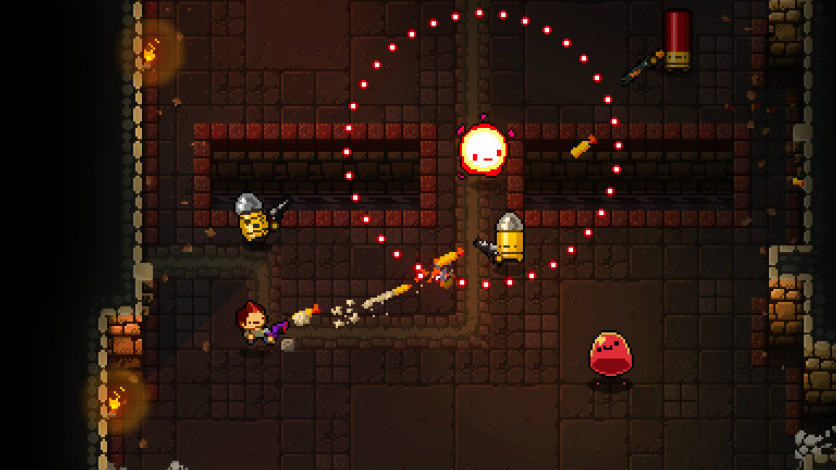

Music And How It Can Affect Your Train Of Thought
September 30, 2021 by Lenroy Hinds
Music can raise someone's mood, get them excited, or make them calm and relaxed. Music also - and this is important - allows us to feel nearly or possibly all emotions that we experience in our lives. Music is a basic need of human survival. Music is one of the ways we make sense of our lives, one of the ways in which we express feelings when we have no words, a way for us to understand things with our hearts when we can't with our minds.
It is not until you reach a certain point in your life, regardless of your emotion. Have you ever sat down and truly listened to the lyrics of a song, and then you sit there in awe as the lyrics relate to a situation you are currently going through. Just the other day I was listening to "The Trick" by AJR. In the instance when the song came on, I was fairly drained and a bit tired after finishing up some assignments from a few of my courses which lead to a slight depression. I was quite tired, a bit overwhelmed, and thinking of whether or not university was for me. At this point, I regained my focus on the song and the lyrics registered.
"We'll get out of this, We'll get out of this too, I'm not proud of this, But I'm not proud of the truth"
Granted, the latter half is in reference to the beginning of the song, but the instance of "we'll get out of this", offered enough motivation for me to be convinced, despite how hard things are, I will get by, get better and graduate in the future not too far from now.Music can be power eh? Quite an entryway to the soul indeed.
What Makes A Good Game, A Good Game
October 1, 2021 by Lenroy Hinds
What makes a good video game? Even though we just said gameplay trumps a great story, story still plays a key role in a game's success. A great story can keep the player immersed in the world you've created. Story and gameplay are both vital for having a great game. Players should feel attached to the characters and want to continue playing to see how the story unfolds. While gameplay is important, it doesn't always save a game. When making a game, you should know what type of game you’re creating and what experience the player should have. A game can be a way to tell a story in an interactive setting. Think about the most immersive games you've played, and the chances are it's the story that drew you in and made you want to keep playing.
Just the other day I reinstalled a copy of "Enter the Gungeon." The reason to love this game isn't just for the fun 16-bit art style, all of the allusions to classic gaming, or the randomized rooms. What makes this game fun is how it doesn't take itself too seriously and provides a fun challenge for casual and intense gamers alike.
There is some progression in the sense that you will open new guns, items, and NPCs from the dungeon but you will essentially always start fresh over as it is in the hands of RNG whether you find the newly unlocked stuff on your next run. You won't be able to carry over stat increases or anything like that.
Player skill matters a huge deal in this game so you will most definitely see "progress" in that matter as you learn the enemy bullet patterns and behaviors. If you get good enough, you will be able to finish the game more often than not even if you get a bit unlucky with the RNG.